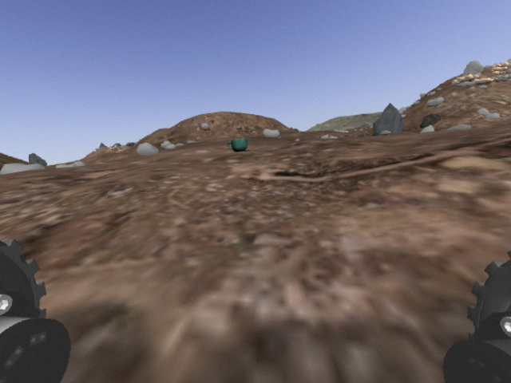

Gathering and processing sensory data
Practice
1: Leo Rover
-
Install the Leo rover ROS packages:
sudo apt update sudo apt install ros-noetic-leo*
-
Start the Gazebo simulator with the Mars landscape using the instructions from http://wiki.ros.org/leo_gazebo.
-
Start the teleop node and move the robot.
2: Coffee on Mars - Capturing Images
Warning
The Mars rover sent an image of an unusual object that looks like a coffee mug! The task is to turn the rover towards the mug and approach it for detailed examination.

-
Start Gazebo:
gazebo
-
In the
insertpanel, search for thegoogleresearch/models/cole_hardware_mug_classic_bluemodel and place it in the simulation. This is necessary to have the mug model in our file system later.
-
Close Gazebo.
-
Download the
leo_masryard_coffee.launchandmarsyard_coffe.worldfiles, then copy them to thecatkin_ws/src/ros_course/launchandcatkin_ws/src/ros_course/worldsdirectories respectively.
-
Modify the file paths
/home/tamas/.ignition/fuel/fuel...in the.worldfiles to match your own.
-
Launch the simulator:
roslaunch ros_course leo_marsyard_coffee.launch
-
Start the teleop and
rqt_image_view:rosrun leo_teleop key_teleoprosrun rqt_image_view rqt_image_view
-
Capture images showing the coffee mug being visible and not visible.
3: Coffee on Mars - Offline Image Processing
-
Write a Python script to read and display the captured images.
-
Perform color-based segmentation (or any other method) to segment the coffee mug.
-
Determine the center of the mug in image coordinates.
-
Filter out the noise caused by segmentation.
4: Coffee on Mars - Online Perception Node
-
Subscribe to the
/camera/image_rawtopic and display the received images using thecv.imshow()function.
-
Integrate our working computer vision algorithm into a ROS node.
-
Publish the detected mug's center coordinates in a new topic. You can use types like
Int32MultiArray,Point2D, or define your own (the mug size will be needed later).
-
Bonus: Publish the mask and masked image in separate Image topics.
5: Coffee on Mars - Operation Logic Node
-
Write a new ROS node that receives messages from the perception node and is capable of controlling the rover's movement.
-
Rotate the rover in place until the mug is in the center of the image.
-
Approach the mug until its apparent size does not exceed 50% of the image size.
-
Capture an image of the suspicious object.
5+1: Bonus
-
Explore the insertable models in Gazebo's
insertpanel and choose one that can be detected on the camera image using a different method (e.g., template matching).
-
Modify the nodes to approach this object with the rover.